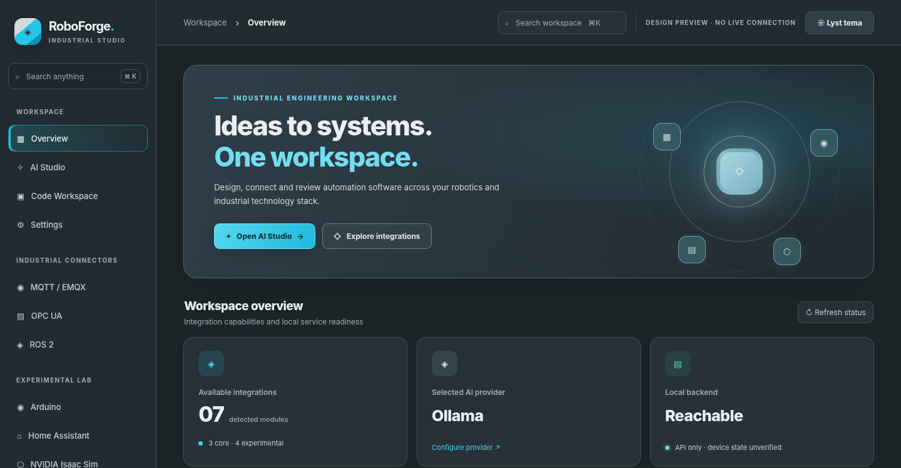

01 ROBOTICS
⬡
Prototype robot workflows
Inspect ROS 2 nodes and topics over rosbridge, subscribe to selected messages and review explicitly authorized publications.
ROS 2 · rosbridgeExplore industrial protocols, prototype robotic integrations and review AI-assisted code from one local-first engineering workspace.
01 / USE CASES
RoboForge helps organize the early stages of engineering work without pretending to replace specialized industrial systems or safety validation.
Inspect ROS 2 nodes and topics over rosbridge, subscribe to selected messages and review explicitly authorized publications.
ROS 2 · rosbridgeBrowse a configured OPC UA address space and read values locally before designing higher-level tooling.
OPC UA · read-onlySubscribe to MQTT-over-WebSocket topics, observe event traffic and publish only after human confirmation.
MQTT · EMQXChoose local Ollama or an optional external API. Generate drafts, inspect resulting files and review before deployment.
Ollama · OpenAI · DeepSeekExplore Isaac Sim-related ROS telemetry such as /clock in experimental workflows—without claiming scene-control support.
Monitor authorized Arduino serial data, Home Assistant entities and selected enterprise API resources where available.
Arduino · Home Assistant · SiemensUse optional local REA to collect static analysis Evidence from selected JavaScript/Electron, .NET, Go and Rust artifacts with explicit authorization.
REA · opt-in · experimental02 / INTERFACE
Graphite, silver and cyan. A restrained working environment with distinct light and dark appearances.

ⓘ These are approved static design previews, not live React/runtime or hardware test screenshots. The depicted status indicators are illustrative.
03 / CONNECTORS
Eleven bundled integration modules are documented here. Each has defined limitations; experimental integrations have not been validated for industrial deployment.
rosbridge inspection, subscriptions, confirmed publish
Local address-space browse and read
WebSocket telemetry and confirmed publish
ROS-based clock observation; no scene control
Product-specific configured HTTPS API inspection
Permission-gated Web Serial monitoring
Authenticated entity and automation observation
Optional local static analysis Evidence · external official REA CLI required
Optional isolated CPL → CPA text preview; trusted local checkout required
Multimodal integration planned; no inference or bundled model weights
Target-aware source review, optional fail-closed ClamAV preflight, verified build manifest inspection; separate Linux installation required
New bundled modules can be added to source and discovered at build time. No arbitrary remote code loading.
04 / PROVIDERS
Local-first doesn't mean local-only. RoboForge defaults to Ollama; external model services are optional and explicitly selected in Settings. Credentials must stay private.
Results are reviewable text. Generated commands must not be executed on robots or machines without independent validation and operator approval.
05 / GET STARTED
Extract the source archive, install dependencies, run the automated tests and open the application. Node.js 20.19+ or 22+ and npm are required for the first build.
For Linux launchers, optional integrations and configuration, see the project README on GitHub. The website you are viewing is a project presentation, not the RoboForge application.
npm --prefix frontend install
npm --prefix frontend run build
npm --prefix backend test
node backend/server.jsFrontend production build and real hardware, Siemens tenant, model provider and service integrations have not been independently verified in this presentation package. Local API health does not prove that connected equipment is available. Any live deployment requires separate authorization, safety review and acceptance testing.
06 / OPEN SOURCE
RoboForge Studio is an open-source engineering workbench released under the MIT License. Explore the code, follow development and contribute on GitHub.
Developers and engineers can contribute bug reports, reproducible test cases, documentation and proposals for new integrations. RoboForge remains under active development, and connections to physical industrial systems require independent validation before use.